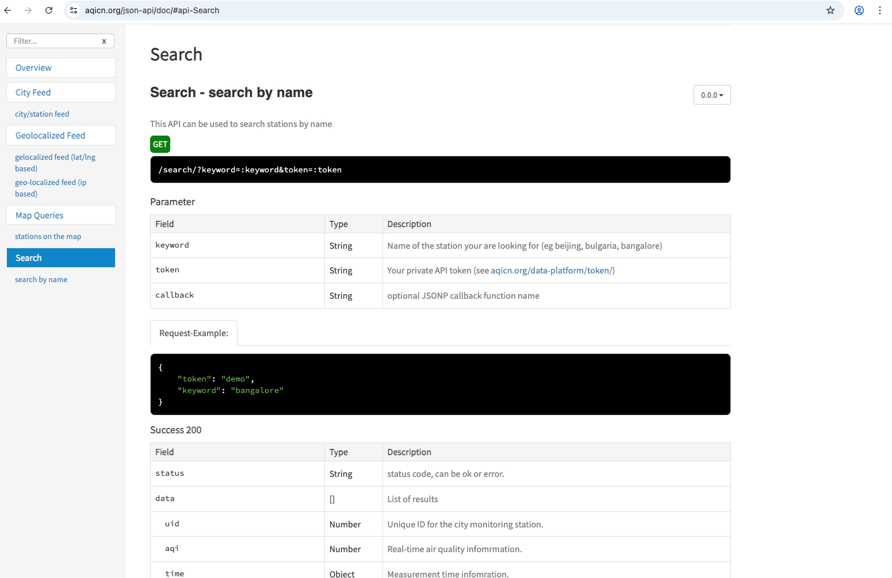

WEB APIS, DICTIONARIES + LISTS IN PYTHON
DESCRIPTION
- The
purposeof this exercise is to practice receiving data from a WEB API: specifically The World Air Quality Index API - You will be required to make
requeststo the API,exploreanddocumentthe results, andreadthe API documentation -- all similar tasks to an example we just did in class. - This is
not a test: you can discuss solutions, issues with each other and the instructor. - PLEASE
try not to use AI tools for this exercise. - You will be required to
complete all items in the list belowin order to get full marks. - This exercise is
worth 5%of your grade WHO: Please work in teams oftwo or three- not one, not four.WHEN: All team members mustbefore the end of class (Monday Sept 22 2025 5:15 pm)THE DELIVERABLE: All team members must individually upload the python project (with all comments and code included NEATLY and NUMBERED) to their own github repository and provide the url in the submission box of the CART 351 moodle page
WHAT TO DO
- Set up your
workspace
- Create a new project called
student-name-1_student-name-2_exercise_one(student-name-1, and student-name-2 are the team members names) in VisualStudio Code. - Then create a new file in the project called
ex-one.py. - Create a new virtual environment with python =3.13, and activate it with necessary
condacommands. - Use
pipwithin your activated virtual environment to install therequestslibrary. And you are set up!
- Create a new project called
- to the web
api:
- This exercise is going to help you to practice how one API in particular works, or at least a subset of a particular web API---the World Air Quality Index API.
- The idea is that by introducing you to this one API, you'll learn the tools
necessary to sign up for, query, and interpret APIs from other providers as
well. Before you can use the Air Quality Index API,
you need to sign up for an API key. - Do so by going to the
API'stoken request form and following the instructions. You'll need to provide your e-mail address. (When I signed up, I got my confirmation e-mail and API key very fast!) After confirming your e-mail address, you'll get your token.Tokenin this context is just another word forAPI key. The token is just a string of letters and numbers. - Whenever you make a request to that API, you'll need to include your key in the request.
- Look at the
documentation
- The documentation for a web API usually describes what the API can do in terms of the URLs you can access, the
patterns that those URLs follow, and the format of the responses. Here's an example
screenshot of the documentation page for the
search functionof the World Air Quality Index API:
- The box under
GETshows you what the URL path should look like to make this request. - Inside the path, the words preceded by colons (like `:keyword`) are
intended to be
placeholders: you should replace those with the values that correspond to what you want the request to do. - The
Parametertable shows what the placeholder values mean. (Don't worry about the `callback` parameter—that's only useful if you're a Javascript programmer.) - The
Success 200field shows what theresponselooks like. It tells you the names and types of the values in the JSON object returned in the response.
- The documentation for a web API usually describes what the API can do in terms of the URLs you can access, the
patterns that those URLs follow, and the format of the responses. Here's an example
screenshot of the documentation page for the
- Write the initial
request
- So: you are now ready to write the initial search request in your python script... I will help you get started...
- You will write a
requestto give back all the results formontreal:import requests token = "your api key" # replace this with your own key url = "https://api.waqi.info/search/" response = requests.get(url, params={"token": token, "keyword":"montreal"}) results = response.json() print(results) - Run the code above
- Add comments to what each line does
- Write the code and or answer the
questions as comments in the code NEATLY so that I can read it :)
Also note how in the first couple of questions I am helping you to get the answers .... (I am not trying to trick you ;))- In your script write the code to get the
typeof theresultsvariable. Run the code and document the answer. - In your script write the code to get the
keysof the results variable. Run the code and document the answer - The first key of the
resultsvariable is calleddata. If you look in the documentation: response fields: you will access all the necessary info:). So - now write the code to access the content associated with thedatafield. - Save the result from the expression as a variable called
responseData.
Then find out the
typeofresponseData. Document your findings. - In your script write the code to get the
- What is the result of running the following code (put the code after
the assignment above):
for item in responseData: print(item)itemrepresent? - Write the code to determine the type of the
itemvariable - Write the code to determine the keys associated with the
itemvariable - Modify the code above to now print out the
nameof eachstationfrom the responseData. Document the results. - Append the code above to also print out the
geolocationsof eachstationfrom the responseData.
The output for the geolocation should look like the following example - then document your results:lat: 45.426509 long: -73.928944 - Append the code above to print out the
air quality indexfor each item AND theuidfor each item. The output needs to be neat and labelled! - Access the feed
results:
- Now you have gotten a response from the API, and you have parsed it into a Python data structure that you know how to use (a dictionary :)).
- But now what do we do with it? Look next at the feed resource for the Air Quality API.
- According to the documentation, you can make a request to get air quality information about a particular city by accessing a path
with the following format:
/feed/:city/?token=:token. - Here
:city-> will be replaced with one or more of theuid'sthat you obtained from the previous query. - And
:token-> is your api key. - Lets start a new request ... and say that we wanted the results for the city with
uid == 5468then this is the script:url_feed ="https://api.waqi.info/feed/@5468" response_feed = requests.get(url_feed, params={"token":token}) results_feed = response_feed.json() print(results_feed) - Add the above code and run it
- So - now write the code to access the content associated with the
datafield. Save the result from the expression as a variable calledresponse_data_feed. What is thetypeof this variable? - Write a
for loop to iterate through the `response_data_feed`variable . Document the results - Next write the expression to access the
aqifield and thedominentpolfield - according to the documentation what does this field represent? Save both values in new variables. - OK ... now access you will access the
iaqifield. You will see that the result is another dictionary, with keys for different pollutants. Each one of those keys—somewhat inexplicably—has another dictionary for its values, whose only key (`v`) points to the actual value for that pollutant... Write the code and document your results - Let's use the value from the
dominentpolfield to access the actual value for that pollutant... (i.e.dominentpol =so) - how can we use the data from theiaqifield to access the actual value? - Hint: the keys from the iaqi dictionary map directly to the
dominentpolfield. Write the code to access this value...and document your results
- So - now that you can access the feed for a specific station in a particular city, and from that feed you can access the value of its dominant pollutant.... : explain theoretically (you do not have to write the code) what the process would be to access the value of the dominant pollutant value from different cities ...